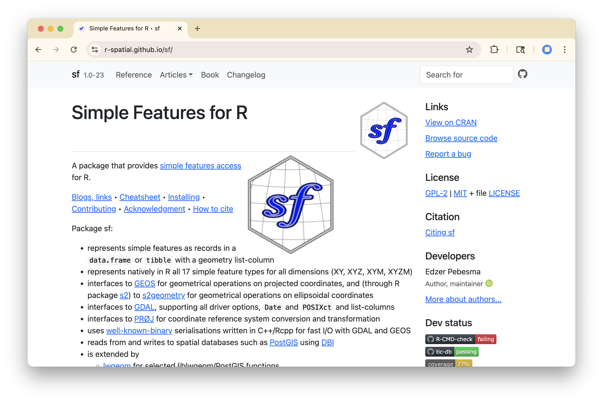
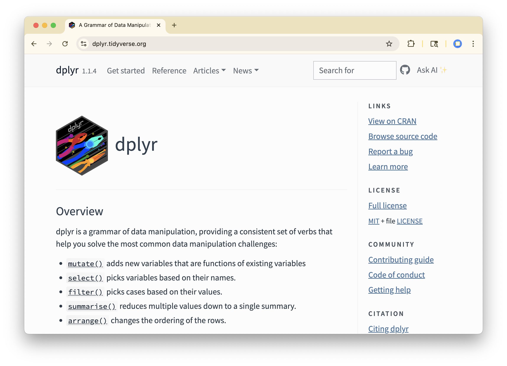

Type: Package
Package: dplyr
Title: A Grammar of Data Manipulation
Version: 1.1.4.9000
Authors@R: c(
person("Hadley", "Wickham", , "hadley@posit.co", role = c("aut", "cre"),
comment = c(ORCID = "0000-0003-4757-117X")),
person("Romain", "François", role = "aut",
comment = c(ORCID = "0000-0002-2444-4226")),
person("Lionel", "Henry", role = "aut"),
person("Kirill", "Müller", role = "aut",
comment = c(ORCID = "0000-0002-1416-3412")),
person("Davis", "Vaughan", , "davis@posit.co", role = "aut",
comment = c(ORCID = "0000-0003-4777-038X")),
person("Posit Software, PBC", role = c("cph", "fnd"))
)
Description: A fast, consistent tool for working with data frame like
objects, both in memory and out of memory.
License: MIT + file LICENSE
URL: https://dplyr.tidyverse.org, https://github.com/tidyverse/dplyr
BugReports: https://github.com/tidyverse/dplyr/issues
Depends:
R (>= 4.1.0)
Imports:
cli (>= 3.6.2),
generics,
glue (>= 1.3.2),
lifecycle (>= 1.0.4.9000),
magrittr (>= 1.5),
methods,
pillar (>= 1.9.0),
R6,
rlang (>= 1.1.3),
tibble (>= 3.2.0),
tidyselect (>= 1.2.0),
utils,
vctrs (>= 0.6.5.9000)
Suggests:
bench,
broom,
callr,
covr,
DBI,
dbplyr (>= 2.2.1),
ggplot2,
knitr,
Lahman,
lobstr,
microbenchmark,
nycflights13,
purrr,
rmarkdown,
RMySQL,
RPostgreSQL,
RSQLite,
stringi (>= 1.7.6),
testthat (>= 3.1.5),
tidyr (>= 1.3.0),
withr
VignetteBuilder:
knitr
Config/build/compilation-database: true
Config/Needs/website: tidyverse, shiny, pkgdown, tidyverse/tidytemplate
Config/testthat/edition: 3
Encoding: UTF-8
LazyData: true
Roxygen: list(markdown = TRUE)
RoxygenNote: 7.3.3
Remotes:
r-lib/lifecycle,
r-lib/vctrsR Packages I
Organize and share your code
Agenda
- Prequel: Setting up your own repo
- Why package?
- Structure of a package
- My first package
- Sharing packages
Reference: R Packages by Hadley Wickham and Jenny Bryan https://r-pkgs.org/
Prequel: Setting up your own repo
Why set up your own repo?
- Anytime you do a new analysis
- Anytime you write an R package
GitHub is an excellent way to showcase your work to employers
Step-by-step
- Create new empty repo on GitHub and copy URL (either ssh or https)
- In Positron / RStudio, create new folder / project from Git
- Create and edit files (.r, .qmd)
- Create
.gitignorefile - Stage, commit, and push changes
Reference: https://happygitwithr.com/
Adding a .gitignore
.gitignore is a plain text file that lists the files in the repo that git should track (not commit / not push to github). Each line is a path to an ignored file / directory.
Good for:
- Private data / documents
- Large files (e.g. large data sets)
Why Package?
Why Write a Package?
An R package is a structured way to…
- DRY out your project code
- Combine similar functionality in one place
- Ease portability and sharing
- Keep track of versions
- Document your functions
- Test your functions
Structure of a package
Question: Which is your favorite R package?
ggplot2: vizdplyr: wrangling, joinspenguins: penguins datatidyr: pivoting
forcats: factorsstringr: stringslubridate: dates/timessf: spatial


Structure of a package
An R package is a directory with:
DESCRIPTION: a text file with meta-data about the packageR/: a subdir with at least one.rfile that defines functionsNAMESPACE: a text file describing which functions users can access
It also often has:
man/: a subdir of help files (manual)data/: a subdir with data sets in.Rdformattests/: a subdir of tests in.rfilesREADME.md: a brief how-to for users
DESCRIPTION
A plain text file containing package metadata including:
Often also includes information on software that it relies upon (dependencies).
R/ subdirectory
A subdirectory containing one or more .r scripts that define functions.
arrange.r
#' Order rows using column values
#'
#' @description
#' `arrange()` orders the rows of a data frame by the values of selected
#' columns.
#'
#' Unlike other dplyr verbs, `arrange()` largely ignores grouping; you
#' need to explicitly mention grouping variables (or use `.by_group = TRUE`)
#' in order to group by them, and functions of variables are evaluated
#' once per data frame, not once per group.
#'
#' @details
#' ## Missing values
#' Unlike base sorting with `sort()`, `NA` are:
#' * always sorted to the end for local data, even when wrapped with `desc()`.
#' * treated differently for remote data, depending on the backend.
#'
#' @return
#' An object of the same type as `.data`. The output has the following
#' properties:
#'
#' * All rows appear in the output, but (usually) in a different place.
#' * Columns are not modified.
#' * Groups are not modified.
#' * Data frame attributes are preserved.
#' @section Methods:
#' This function is a **generic**, which means that packages can provide
#' implementations (methods) for other classes. See the documentation of
#' individual methods for extra arguments and differences in behaviour.
#'
#' The following methods are currently available in loaded packages:
#' \Sexpr[stage=render,results=rd]{dplyr:::methods_rd("arrange")}.
#' @export
#' @param .data A data frame, data frame extension (e.g. a tibble), or a
#' lazy data frame (e.g. from dbplyr or dtplyr). See *Methods*, below, for
#' more details.
#' @param ... <[`data-masking`][rlang::args_data_masking]> Variables, or
#' functions of variables. Use [desc()] to sort a variable in descending
#' order.
#' @param .by_group If `TRUE`, will sort first by grouping variable. Applies to
#' grouped data frames only.
#' @param .locale The locale to sort character vectors in.
#'
#' - If `NULL`, the default, uses the `"C"` locale unless the
#' `dplyr.legacy_locale` global option escape hatch is active. See the
#' [dplyr-locale] help page for more details.
#'
#' - If a single string from [stringi::stri_locale_list()] is supplied, then
#' this will be used as the locale to sort with. For example, `"en"` will
#' sort with the American English locale. This requires the stringi package.
#'
#' - If `"C"` is supplied, then character vectors will always be sorted in the
#' C locale. This does not require stringi and is often much faster than
#' supplying a locale identifier.
#'
#' The C locale is not the same as English locales, such as `"en"`,
#' particularly when it comes to data containing a mix of upper and lower case
#' letters. This is explained in more detail on the [locale][dplyr-locale]
#' help page under the `Default locale` section.
#' @family single table verbs
#' @examples
#' arrange(mtcars, cyl, disp)
#' arrange(mtcars, desc(disp))
#'
#' # grouped arrange ignores groups
#' by_cyl <- mtcars |> group_by(cyl)
#' by_cyl |> arrange(desc(wt))
#' # Unless you specifically ask:
#' by_cyl |> arrange(desc(wt), .by_group = TRUE)
#'
#' # use embracing when wrapping in a function;
#' # see ?rlang::args_data_masking for more details
#' tidy_eval_arrange <- function(.data, var) {
#' .data |>
#' arrange({{ var }})
#' }
#' tidy_eval_arrange(mtcars, mpg)
#'
#' # Use `across()` or `pick()` to select columns with tidy-select
#' iris |> arrange(pick(starts_with("Sepal")))
#' iris |> arrange(across(starts_with("Sepal"), desc))
arrange <- function(.data, ..., .by_group = FALSE) {
UseMethod("arrange")
}
#' @rdname arrange
#' @export
arrange.data.frame <- function(.data, ..., .by_group = FALSE, .locale = NULL) {
dots <- enquos(...)
if (.by_group) {
dots <- c(quos(!!!groups(.data)), dots)
}
loc <- arrange_rows(.data, dots = dots, locale = .locale)
dplyr_row_slice(.data, loc)
}
# Helpers -----------------------------------------------------------------
arrange_rows <- function(data, dots, locale, error_call = caller_env()) {
dplyr_local_error_call(error_call)
size <- nrow(data)
# `arrange()` implementation always uses bare data frames
data <- new_data_frame(data, n = size)
# Strip out calls to desc() replacing with direction argument
is_desc_call <- function(x) {
quo_is_call(x, "desc", ns = c("", "dplyr"))
}
directions <- map_chr(dots, function(dot) {
if (is_desc_call(dot)) "desc" else "asc"
})
dots <- map(dots, function(dot) {
if (is_desc_call(dot)) {
expr <- quo_get_expr(dot)
if (!has_length(expr, 2L)) {
abort(
"`desc()` must be called with exactly one argument.",
call = error_call
)
}
dot <- new_quosure(expr[[2]], quo_get_env(dot))
}
dot
})
n_dots <- length(dots)
seq_dots <- seq_len(n_dots)
cols <- vector("list", length = n_dots)
names(cols) <- as.character(seq_dots)
for (i in seq_dots) {
name <- vec_paste0("..", i)
dot <- dots[[i]]
# Evaluate each `dot` on the original data separately, rather than
# evaluating all at once. We want to avoid the "sequential evaluation"
# feature of `mutate()` where the 2nd expression can access results of the
# 1st (#6495).
elt <- mutate(data, "{name}" := !!dot, .keep = "none")
elt <- elt[[name]]
if (is.null(elt)) {
# In this case, `dot` evaluated to `NULL` for "column removal" so
# `elt[[name]]` won't exist, but we don't want to shorten `cols`.
next
}
cols[[i]] <- elt
}
if (vec_any_missing(cols)) {
# Drop `NULL`s that could result from `dot` evaluating to `NULL` above
not_missing <- !vec_detect_missing(cols)
cols <- vec_slice(cols, not_missing)
directions <- vec_slice(directions, not_missing)
}
data <- new_data_frame(cols, n = size)
if (is.null(locale) && dplyr_legacy_locale()) {
# Temporary legacy support for respecting the system locale.
# Only applied when `.locale` is `NULL` and `dplyr.legacy_locale` is set.
# Matches legacy `group_by()` ordering.
out <- dplyr_order_legacy(data = data, direction = directions)
return(out)
}
na_values <- if_else(directions == "desc", "smallest", "largest")
chr_proxy_collate <- locale_to_chr_proxy_collate(
locale = locale,
error_call = error_call
)
vec_order_radix(
x = data,
direction = directions,
na_value = na_values,
chr_proxy_collate = chr_proxy_collate
)
}
locale_to_chr_proxy_collate <- function(
locale,
...,
has_stringi = has_minimum_stringi(),
error_call = caller_env()
) {
check_dots_empty0(...)
if (is.null(locale) || is_string(locale, string = "C")) {
return(NULL)
}
if (is_character(locale)) {
if (!is_string(locale)) {
abort(
"If `.locale` is a character vector, it must be a single string.",
call = error_call
)
}
if (!has_stringi) {
abort(
"stringi >=1.5.3 is required to arrange in a different locale.",
call = error_call
)
}
if (!locale %in% stringi::stri_locale_list()) {
abort(
"`.locale` must be one of the locales within `stringi::stri_locale_list()`.",
call = error_call
)
}
return(sort_key_generator(locale))
}
abort("`.locale` must be a string or `NULL`.", call = error_call)
}
sort_key_generator <- function(locale) {
function(x) {
stringi::stri_sort_key(x, locale = locale)
}
}
# ------------------------------------------------------------------------------
dplyr_order_legacy <- function(data, direction = "asc") {
if (df_n_col(data) == 0L) {
# Work around `order(!!!list())` returning `NULL`
return(seq_len(nrow(data)))
}
proxies <- map2(data, direction, dplyr_proxy_order_legacy)
proxies <- unname(proxies)
inject(order(!!!proxies))
}
dplyr_proxy_order_legacy <- function(x, direction) {
# `order()` doesn't have a vectorized `decreasing` argument for most values of
# `method` ("radix" is an exception). So we need to apply this by column ahead
# of time. We have to apply `vec_proxy_order()` by column too, rather than on
# the original data frame, because it flattens df-cols and we can lose track
# of where to apply `direction`.
x <- vec_proxy_order(x)
if (is.data.frame(x)) {
if (any(map_lgl(x, is.data.frame))) {
abort(
"All data frame columns should have been flattened by now.",
.internal = TRUE
)
}
# Special handling for data frame proxies (either from df-cols or from
# vector classes with df proxies, like rcrds), which `order()` can't handle.
# We have to replace the df proxy with a single vector that orders the same
# way, so we use a dense rank that utilizes the system locale.
unique <- vec_unique(x)
order <- dplyr_order_legacy(unique, direction)
sorted_unique <- vec_slice(unique, order)
out <- vec_match(x, sorted_unique)
return(out)
}
if (
!is_character(x) &&
!is_logical(x) &&
!is_integer(x) &&
!is_double(x) &&
!is_complex(x)
) {
abort("Invalid type returned by `vec_proxy_order()`.", .internal = TRUE)
}
if (is.object(x)) {
x <- unstructure(x)
}
if (direction == "desc") {
x <- desc(x)
}
x
}NAMESPACE
A plaintext file that lists the functions to export (make available to users) and the functions to import from other packages.
NAMESPACE
# Generated by roxygen2: do not edit by hand
S3method("$<-",grouped_df)
S3method("[",fun_list)
S3method("[",grouped_df)
S3method("[",rowwise_df)
S3method("[<-",grouped_df)
S3method("[<-",rowwise_df)
S3method("[[<-",grouped_df)
S3method("names<-",grouped_df)
S3method("names<-",rowwise_df)
S3method(add_count,data.frame)
S3method(add_count,default)
S3method(anti_join,data.frame)
S3method(arrange,data.frame)
S3method(arrange_,data.frame)
S3method(arrange_,tbl_df)
S3method(as.data.frame,grouped_df)
S3method(as.tbl,data.frame)
S3method(as.tbl,tbl)
S3method(as_join_by,character)
S3method(as_join_by,default)
S3method(as_join_by,dplyr_join_by)
S3method(as_join_by,list)
S3method(as_tibble,grouped_df)
S3method(as_tibble,rowwise_df)
S3method(auto_copy,data.frame)
S3method(cbind,grouped_df)
S3method(collapse,data.frame)
S3method(collect,data.frame)
S3method(common_by,"NULL")
S3method(common_by,character)
S3method(common_by,default)
S3method(common_by,list)
S3method(compute,data.frame)
S3method(copy_to,DBIConnection)
S3method(copy_to,src_local)
S3method(count,data.frame)
S3method(cross_join,data.frame)
S3method(distinct,data.frame)
S3method(distinct_,data.frame)
S3method(distinct_,grouped_df)
S3method(distinct_,tbl_df)
S3method(do,"NULL")
S3method(do,data.frame)
S3method(do,grouped_df)
S3method(do,rowwise_df)
S3method(do_,"NULL")
S3method(do_,data.frame)
S3method(do_,grouped_df)
S3method(do_,rowwise_df)
S3method(dplyr_col_modify,data.frame)
S3method(dplyr_col_modify,grouped_df)
S3method(dplyr_col_modify,rowwise_df)
S3method(dplyr_reconstruct,data.frame)
S3method(dplyr_reconstruct,grouped_df)
S3method(dplyr_reconstruct,rowwise_df)
S3method(dplyr_row_slice,data.frame)
S3method(dplyr_row_slice,grouped_df)
S3method(dplyr_row_slice,rowwise_df)
S3method(filter,data.frame)
S3method(filter,ts)
S3method(filter_,data.frame)
S3method(filter_,tbl_df)
S3method(filter_bullets,"dplyr:::filter_incompatible_size")
S3method(filter_bullets,"dplyr:::filter_incompatible_type")
S3method(format,src_local)
S3method(full_join,data.frame)
S3method(group_by,data.frame)
S3method(group_by_,data.frame)
S3method(group_by_,rowwise_df)
S3method(group_by_drop_default,default)
S3method(group_by_drop_default,grouped_df)
S3method(group_data,data.frame)
S3method(group_data,grouped_df)
S3method(group_data,rowwise_df)
S3method(group_data,tbl_df)
S3method(group_indices,data.frame)
S3method(group_indices_,data.frame)
S3method(group_indices_,grouped_df)
S3method(group_indices_,rowwise_df)
S3method(group_keys,data.frame)
S3method(group_map,data.frame)
S3method(group_modify,data.frame)
S3method(group_modify,grouped_df)
S3method(group_nest,data.frame)
S3method(group_nest,grouped_df)
S3method(group_size,data.frame)
S3method(group_split,data.frame)
S3method(group_split,grouped_df)
S3method(group_split,rowwise_df)
S3method(group_trim,data.frame)
S3method(group_trim,grouped_df)
S3method(group_vars,data.frame)
S3method(groups,data.frame)
S3method(inner_join,data.frame)
S3method(intersect,data.frame)
S3method(left_join,data.frame)
S3method(mutate,data.frame)
S3method(mutate_,data.frame)
S3method(mutate_,tbl_df)
S3method(mutate_bullets,"dplyr:::error_incompatible_combine")
S3method(mutate_bullets,"dplyr:::mutate_constant_recycle_error")
S3method(mutate_bullets,"dplyr:::mutate_incompatible_size")
S3method(mutate_bullets,"dplyr:::mutate_mixed_null")
S3method(mutate_bullets,"dplyr:::mutate_not_vector")
S3method(n_groups,data.frame)
S3method(nest_by,data.frame)
S3method(nest_by,grouped_df)
S3method(nest_join,data.frame)
S3method(print,all_vars)
S3method(print,any_vars)
S3method(print,dplyr_join_by)
S3method(print,dplyr_sel_vars)
S3method(print,fun_list)
S3method(print,last_dplyr_warnings)
S3method(print,src)
S3method(pull,data.frame)
S3method(rbind,grouped_df)
S3method(rbind,rowwise_df)
S3method(recode,character)
S3method(recode,factor)
S3method(recode,numeric)
S3method(recode_default,default)
S3method(recode_default,factor)
S3method(reframe,data.frame)
S3method(relocate,data.frame)
S3method(rename,data.frame)
S3method(rename_,data.frame)
S3method(rename_,grouped_df)
S3method(rename_with,data.frame)
S3method(right_join,data.frame)
S3method(rows_append,data.frame)
S3method(rows_delete,data.frame)
S3method(rows_insert,data.frame)
S3method(rows_patch,data.frame)
S3method(rows_update,data.frame)
S3method(rows_upsert,data.frame)
S3method(rowwise,data.frame)
S3method(rowwise,grouped_df)
S3method(same_src,data.frame)
S3method(sample_frac,data.frame)
S3method(sample_frac,default)
S3method(sample_n,data.frame)
S3method(sample_n,default)
S3method(select,data.frame)
S3method(select,list)
S3method(select_,data.frame)
S3method(select_,grouped_df)
S3method(semi_join,data.frame)
S3method(setdiff,data.frame)
S3method(setequal,data.frame)
S3method(slice,data.frame)
S3method(slice_,data.frame)
S3method(slice_,tbl_df)
S3method(slice_head,data.frame)
S3method(slice_max,data.frame)
S3method(slice_min,data.frame)
S3method(slice_sample,data.frame)
S3method(slice_tail,data.frame)
S3method(src_tbls,src_local)
S3method(summarise,data.frame)
S3method(summarise,grouped_df)
S3method(summarise,rowwise_df)
S3method(summarise_,data.frame)
S3method(summarise_,tbl_df)
S3method(summarise_bullets,"dplyr:::summarise_incompatible_size")
S3method(summarise_bullets,"dplyr:::summarise_mixed_null")
S3method(summarise_bullets,"dplyr:::summarise_unsupported_type")
S3method(symdiff,data.frame)
S3method(symdiff,default)
S3method(tally,data.frame)
S3method(tbl,DBIConnection)
S3method(tbl,src_local)
S3method(tbl_ptype,default)
S3method(tbl_sum,grouped_df)
S3method(tbl_sum,rowwise_df)
S3method(tbl_vars,data.frame)
S3method(transmute,data.frame)
S3method(transmute_,data.frame)
S3method(ungroup,data.frame)
S3method(ungroup,grouped_df)
S3method(ungroup,rowwise_df)
S3method(union,data.frame)
S3method(union_all,data.frame)
S3method(union_all,default)
export("%>%")
export(.data)
export(across)
export(add_count)
export(add_count_)
export(add_row)
export(add_rownames)
export(add_tally)
export(add_tally_)
export(all_equal)
export(all_of)
export(all_vars)
export(anti_join)
export(any_of)
export(any_vars)
export(arrange)
export(arrange_)
export(arrange_all)
export(arrange_at)
export(arrange_if)
export(as.tbl)
export(as_data_frame)
export(as_label)
export(as_tibble)
export(auto_copy)
export(bench_tbls)
export(between)
export(bind_cols)
export(bind_rows)
export(c_across)
export(case_match)
export(case_when)
export(changes)
export(check_dbplyr)
export(coalesce)
export(collapse)
export(collect)
export(combine)
export(common_by)
export(compare_tbls)
export(compare_tbls2)
export(compute)
export(consecutive_id)
export(contains)
export(copy_to)
export(count)
export(count_)
export(cross_join)
export(cumall)
export(cumany)
export(cume_dist)
export(cummean)
export(cur_column)
export(cur_data)
export(cur_data_all)
export(cur_group)
export(cur_group_id)
export(cur_group_rows)
export(current_vars)
export(data_frame)
export(db_analyze)
export(db_begin)
export(db_commit)
export(db_create_index)
export(db_create_indexes)
export(db_create_table)
export(db_data_type)
export(db_desc)
export(db_drop_table)
export(db_explain)
export(db_has_table)
export(db_insert_into)
export(db_list_tables)
export(db_query_fields)
export(db_query_rows)
export(db_rollback)
export(db_save_query)
export(db_write_table)
export(dense_rank)
export(desc)
export(dim_desc)
export(distinct)
export(distinct_)
export(distinct_all)
export(distinct_at)
export(distinct_if)
export(distinct_prepare)
export(do)
export(do_)
export(dplyr_col_modify)
export(dplyr_reconstruct)
export(dplyr_row_slice)
export(ends_with)
export(enexpr)
export(enexprs)
export(enquo)
export(enquos)
export(ensym)
export(ensyms)
export(eval_tbls)
export(eval_tbls2)
export(everything)
export(explain)
export(expr)
export(failwith)
export(filter)
export(filter_)
export(filter_all)
export(filter_at)
export(filter_if)
export(first)
export(full_join)
export(funs)
export(funs_)
export(glimpse)
export(group_by)
export(group_by_)
export(group_by_all)
export(group_by_at)
export(group_by_drop_default)
export(group_by_if)
export(group_by_prepare)
export(group_cols)
export(group_data)
export(group_indices)
export(group_indices_)
export(group_keys)
export(group_map)
export(group_modify)
export(group_nest)
export(group_rows)
export(group_size)
export(group_split)
export(group_trim)
export(group_vars)
export(group_walk)
export(grouped_df)
export(groups)
export(id)
export(ident)
export(if_all)
export(if_any)
export(if_else)
export(inner_join)
export(intersect)
export(is.grouped_df)
export(is.src)
export(is.tbl)
export(is_grouped_df)
export(join_by)
export(lag)
export(last)
export(last_col)
export(last_dplyr_warnings)
export(lead)
export(left_join)
export(location)
export(lst)
export(make_tbl)
export(matches)
export(min_rank)
export(mutate)
export(mutate_)
export(mutate_all)
export(mutate_at)
export(mutate_each)
export(mutate_each_)
export(mutate_if)
export(n)
export(n_distinct)
export(n_groups)
export(na_if)
export(near)
export(nest_by)
export(nest_join)
export(new_grouped_df)
export(new_rowwise_df)
export(nth)
export(ntile)
export(num_range)
export(one_of)
export(order_by)
export(percent_rank)
export(pick)
export(progress_estimated)
export(pull)
export(quo)
export(quo_name)
export(quos)
export(recode)
export(recode_factor)
export(recode_values)
export(reframe)
export(relocate)
export(rename)
export(rename_)
export(rename_all)
export(rename_at)
export(rename_if)
export(rename_vars)
export(rename_vars_)
export(rename_with)
export(replace_values)
export(replace_when)
export(right_join)
export(row_number)
export(rows_append)
export(rows_delete)
export(rows_insert)
export(rows_patch)
export(rows_update)
export(rows_upsert)
export(rowwise)
export(same_src)
export(sample_frac)
export(sample_n)
export(select)
export(select_)
export(select_all)
export(select_at)
export(select_if)
export(select_var)
export(select_vars)
export(select_vars_)
export(semi_join)
export(setdiff)
export(setequal)
export(show_query)
export(slice)
export(slice_)
export(slice_head)
export(slice_max)
export(slice_min)
export(slice_sample)
export(slice_tail)
export(sql)
export(sql_escape_ident)
export(sql_escape_string)
export(sql_join)
export(sql_select)
export(sql_semi_join)
export(sql_set_op)
export(sql_subquery)
export(sql_translate_env)
export(src)
export(src_df)
export(src_local)
export(src_mysql)
export(src_postgres)
export(src_sqlite)
export(src_tbls)
export(starts_with)
export(summarise)
export(summarise_)
export(summarise_all)
export(summarise_at)
export(summarise_each)
export(summarise_each_)
export(summarise_if)
export(summarize)
export(summarize_)
export(summarize_all)
export(summarize_at)
export(summarize_each)
export(summarize_each_)
export(summarize_if)
export(sym)
export(symdiff)
export(syms)
export(tally)
export(tally_)
export(tbl)
export(tbl_df)
export(tbl_nongroup_vars)
export(tbl_ptype)
export(tbl_vars)
export(tibble)
export(top_frac)
export(top_n)
export(transmute)
export(transmute_)
export(transmute_all)
export(transmute_at)
export(transmute_if)
export(tribble)
export(type_sum)
export(ungroup)
export(union)
export(union_all)
export(validate_grouped_df)
export(validate_rowwise_df)
export(vars)
export(where)
export(with_groups)
export(with_order)
export(wrap_dbplyr_obj)
import(rlang)
import(vctrs, except = data_frame)
importFrom(R6,R6Class)
importFrom(generics,intersect)
importFrom(generics,setdiff)
importFrom(generics,setequal)
importFrom(generics,union)
importFrom(glue,glue)
importFrom(glue,glue_collapse)
importFrom(glue,glue_data)
importFrom(lifecycle,deprecated)
importFrom(magrittr,"%>%")
importFrom(methods,setOldClass)
importFrom(pillar,glimpse)
importFrom(pillar,tbl_sum)
importFrom(pillar,type_sum)
importFrom(stats,setNames)
importFrom(stats,update)
importFrom(tibble,add_row)
importFrom(tibble,as_data_frame)
importFrom(tibble,as_tibble)
importFrom(tibble,data_frame)
importFrom(tibble,is_tibble)
importFrom(tibble,lst)
importFrom(tibble,new_tibble)
importFrom(tibble,tibble)
importFrom(tibble,tribble)
importFrom(tibble,view)
importFrom(tidyselect,all_of)
importFrom(tidyselect,any_of)
importFrom(tidyselect,contains)
importFrom(tidyselect,ends_with)
importFrom(tidyselect,everything)
importFrom(tidyselect,last_col)
importFrom(tidyselect,matches)
importFrom(tidyselect,num_range)
importFrom(tidyselect,one_of)
importFrom(tidyselect,starts_with)
importFrom(tidyselect,where)
importFrom(utils,head)
importFrom(utils,tail)
useDynLib(dplyr, .registration = TRUE)My First R Package
Question: Why type of data structure will be returned by both commands?
A. An atomic vector
B. A list
C. A tibble
00:30
[[1]]
[1] "alfa" "bravo" "charlie" "delta" [[1]]
[1] "alfa" "bravo" "charlie" "delta" Question: Why type of data structure will be returned by both commands?
A. An atomic vector
B. A list
C. A tibble
Let’s write a function
Goal: provide an analog to strsplit that returns a character vector.
Let’s make a package
You can create the 3 necessary files by hand or use package.skeleton().
Creating directories ...
Creating DESCRIPTION ...
Creating NAMESPACE ...
Creating Read-and-delete-me ...
Saving functions and data ...
Making help files ...
Done.
Further steps are described in './mypak/Read-and-delete-me'.Build and Install
Before use, an R package must be built and then installed. At the terminal:
Load it / test it
[1] "alfa" "bravo" "charlie" "delta" Sharing R packages
Several approaches
- Send the .tar file to collaborators
- Host the package on CRAN
- Host the package on bioconductor
- Host the package on r-universe.dev
- Host the package on GitHub
Sharing through GitHub
Users can install an R package from GitHub using the remotes package.